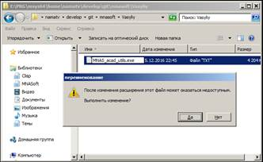
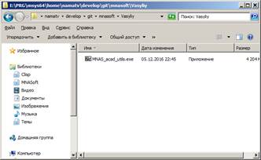
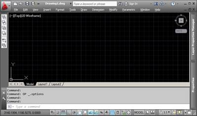
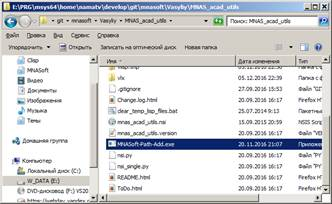
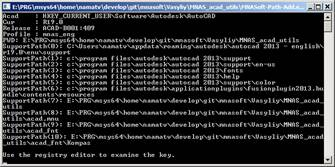
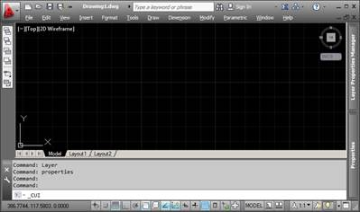
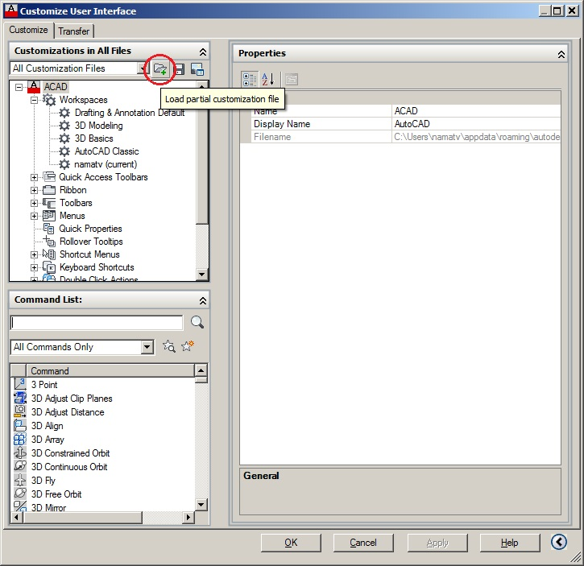
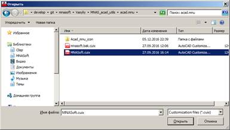
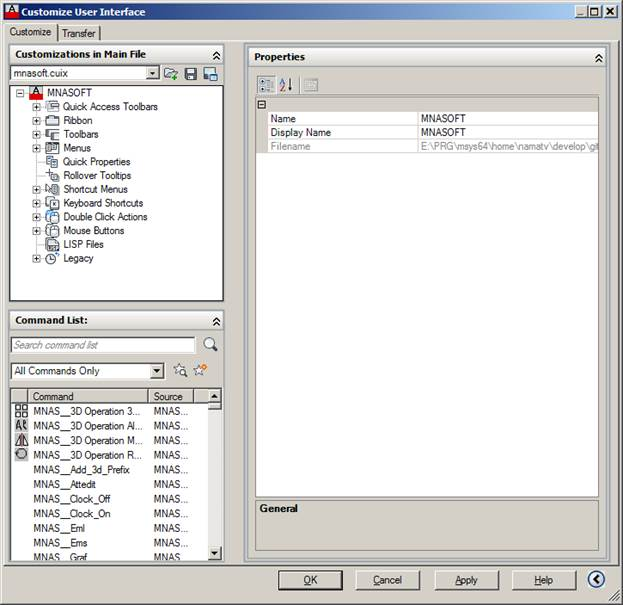

README
Содержание
1. Загрузка и распаковка
1.1. Скачайте zip-архив MNAS_acad_utils (ветку develop) по адресу
https://github.com/mnasoft/MNAS_acad_utils/tree/develop .
Рис. 1.: Скачивание пакета MNAS_acad_utils (ветки develop)
Сохраните файл

Рис. 2.: Сохранение файла
1.2. Распакуйте архив

Рис. 3.: Распаковка архива
2. Настройка
2.1. Выберите версию AutoCAD, к которой вы хотите подключить пакет MNAS_acad_utils
2.1.1. Запустите AutoCAD на выполнение

Рис. 4.: AutoCAD запущен
2.1.2. Прекратите работу AutoCAD
Данная манипуляция делает запись в системнои реестре о последней запущенной версии AutoCAD,
которая используется для подлючения путей.
2.2. Подключение путей
2.2.1. Из каталога установки выполните программу MNASoft-Path-Add.exe

Рис. 5.: Выполните программу MNASoft-Path-Add.exe

Рис. 6.: Программа отражает подключенные пути. Нажмите Enter (Ввод)
Нажмите клавишу Enter
2.3. Подключение меню пакета MNAS_acad_utils
2.3.1. Запустите AutoCAD на выполнение
2.3.2. Выполните команду _CUI

Рис. 7.: В командной строке набрана команда _CUI

Рис. 8.: Кликните мышью папку со значком +
Выберите файл адаптации из .\MNAS_acad_utils-develop\menus\mnasoft.bak.cuix

Рис. 9.: Выбор файла адаптпции (меню)
Нажмите на кнопку OK

Рис. 10.: Подключение меню